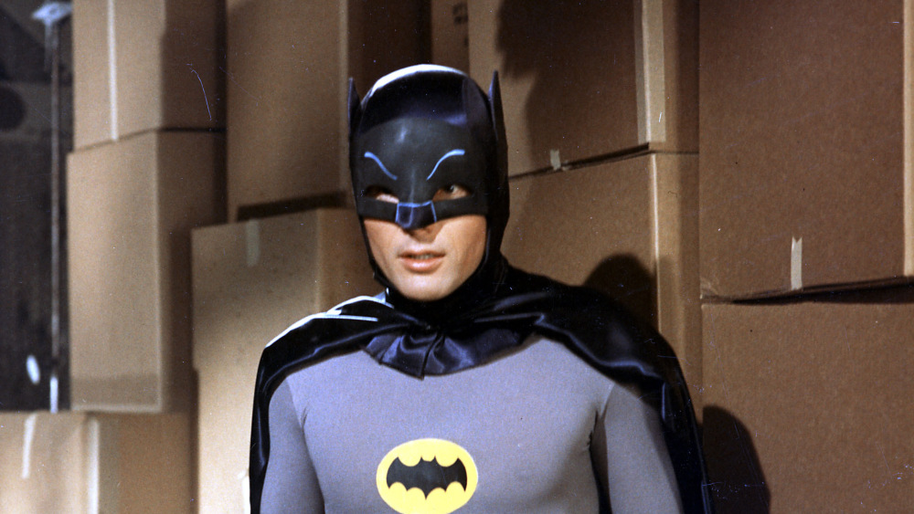
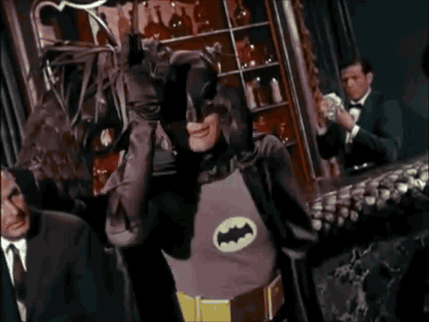

My name is Brandon Pitts. I am an Information System major here at SUU. I work down in the IT Help Desk for the IT departmet. My passion is all things computer. I spent the majority of my time working or playing with or on my computer. I am in my last year of school and excited to start something new after graduation.
I have some experience with the very basics of HTML and CSS but for the most part a lot of my knowledge comes from just playing with it. I love just working to figure things out on my own and a lot of my skills for my job have been developed this way. I am not the most artistic person on the planet but I do love the inner functions of the code. I am excited to learn more about the field within this class and I'm happy for the challenge.
Things I'm excited about!
- The book Dune
- Graduation date coming closer
- The Legend of Zelda, Links Awakening remake
Things I do not like.
- The new Godzilla movie
- Green beans
- Bugs
Favorite Movies
Favorite Movie 1: Blazing Saddles
I enjoy Mel Brooks movies and find older style comedies very funny.Favorite Movie 2: Twister
It is just a fantastic movie even if it didn't age well.Favorite Movie 3: Big Fish
Far fetched and a little out there this movie is just fun and quirky.Photo Gallery
 